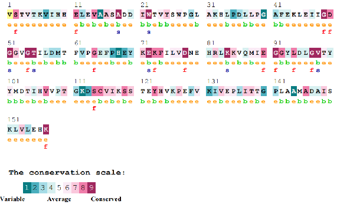
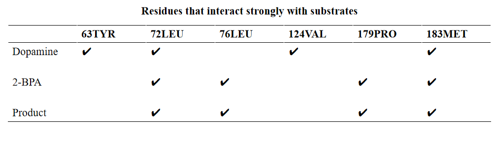
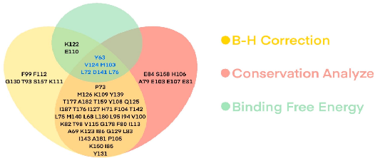
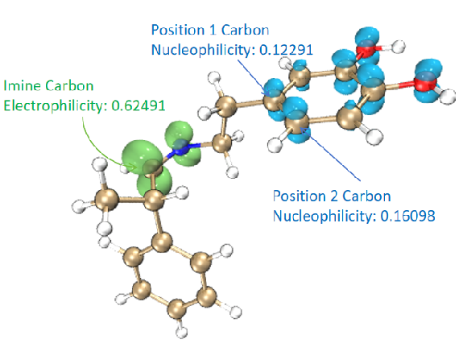
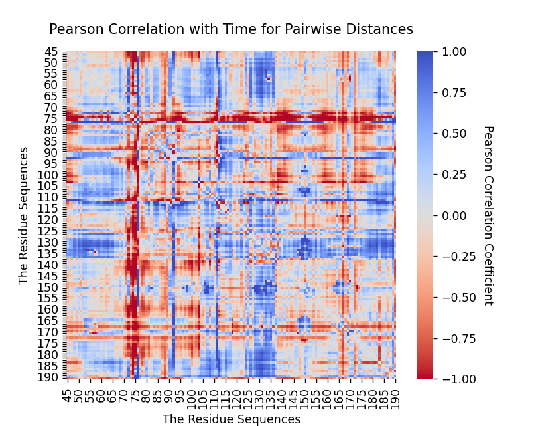
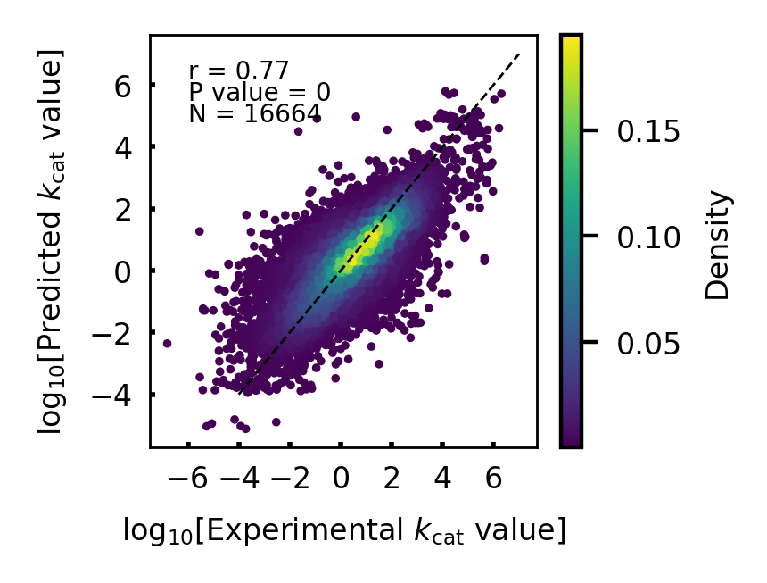
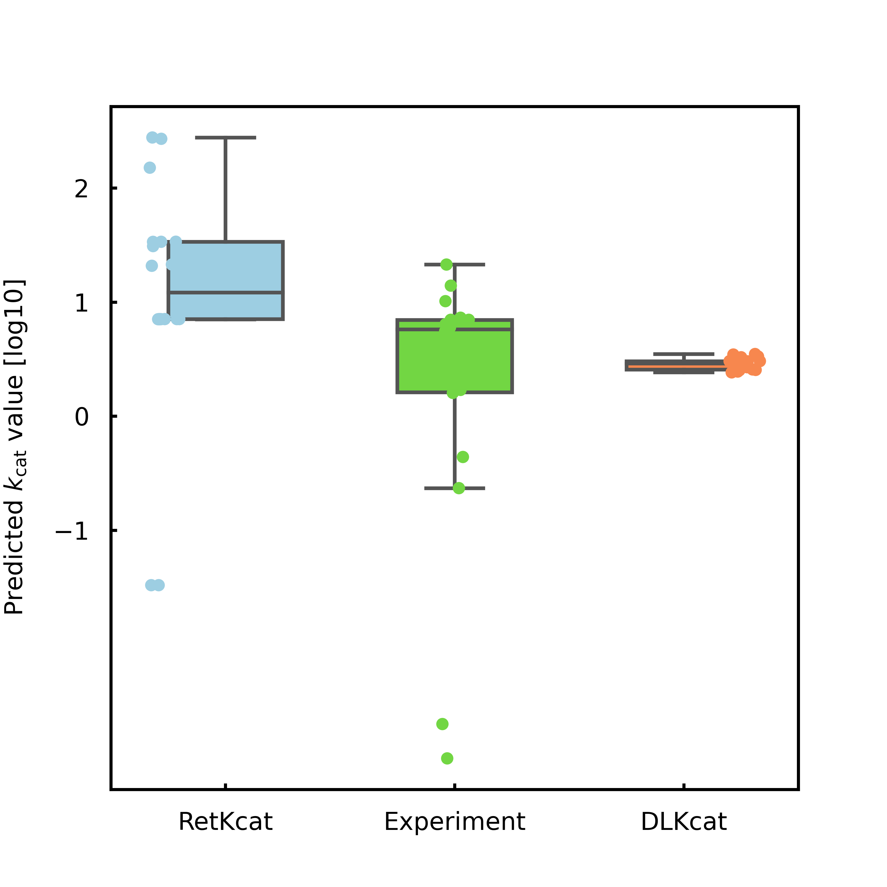

· Discovery of Potentially Significant Mutation Sites for Improving Activity
· Phylogenetic Analysis of Norcoclaurine Synthase
· RetKcat: A Novel Neural Network for Kcat Prediction
Biocatalysts, particularly proteases, offer numerous advantages over traditional organic and transition metal catalysts. They are eco-friendly, using non-toxic reactants and producing green byproducts. However, they also have limitations such as narrow substrate adaptability, complex control conditions, and challenges in obtaining pure proteins. To address these limitations, several advanced methodologies for enzyme redesign have emerged. These include directed evolution, semi-rational design, rational design, and machine learning-based design. Among these, machine learning and rational enzyme design have gained prominence due to increased computational power and mature theories. Biocatalysts have become more accessible and cost-effective in industries like chemistry and pharmaceuticals, playing a significant role in innovative applications.
Norcoclaurine synthase (NCS), originally isolated from Thalictrum flavum, plays a crucial role in the Pictet-Spengler reaction, facilitating the synthesis of (S)-norcoclaurine by condensing dopamine and 2-BPA. NCS also demonstrates catalytic efficiency in handling structurally similar compounds within the Tetrahydroisoquinoline (THIQs) family. These THIQs exhibit various therapeutic properties, including anti-tumor, anti-bacterial, and anti-coagulant effects. However, extracting THIQs from plants results in impurities and limited quantities. Chemical synthesis, on the other hand, involves complex steps, toxic reagents, and environmental concerns. NCS offers a preferable alternative as a catalyst, addressing these issues and finding success in various THIQs synthesis studies.
NCS holds significant promise for industrial applications, leading to numerous attempts at enzyme modification. These efforts aim to harness its potential for large-scale production. Examples include creatively utilizing NCS to construct THIQs with spiral ring structures, introducing functional groups at the alpha position of the carbonyl group for pharmaceutical precursor synthesis, and exploring the introduction of heterocyclic and alkyl-rings into substrates. However, certain substrates, like heterocyclic compounds and bulky substrates, show limited reactivity in catalytic reactions. Additionally, determining the precise catalytic mechanism is crucial for structure-guided design, but despite several proposed mechanisms through structural analysis or molecular simulation, uncertainty remains due to a lack of experimental validation. Recently, machine learning methods have shown promise in predicting Kcat values and warrant further exploration.
Figure 1.Using computational chemistry and artificial intelligence to design NCS.
This study identified key mutation sites with significant effects, offering insights for the rational design of NCS. Furthermore, we proposed a novel catalytic mechanism for NCS in the conversion of dopamine and 2-BPA, supported by molecular simulations and experimental data. Additionally, we introduced a new deep learning model, RetKcat, for precise prediction of the enzyme's turnover number (Kcat).
Figure 1. Value distribution of mutation binding energies (ΔΔGmut, represented by the color scale). Values were determined by virtual saturation mutagenesis of the 62 contacting residues within 8 Å (a typical protein inter-residue contact distance) of the unfavorable binding conformation of E:S in the binding pocket of the enzyme.
Figure 2. Evolutionary conservation analysis of the 62 contacting residues colored by the conservation score.
Figure 3. The four residue that had the strongest interaction with dopamine, 2-BPA, and the product, respectively, were calculated by MMPBSA.
Figure 4. Statistical distribution of the 62 contacting residues according to Gmut and FDR values compared with the wild-type using the one-sample t-test, followed by Benjamini−Hochberg correction. FDR < 0.5, and conservation score <7.
Figure 5. The phylogenetic tree of the representative NCS homologous protein from NCBI databases using the neighbor-joining method with the replicates of 1000 times.
Figure 6. The simplified diagram of the NCS catalytic mechanism is shown below. We have omitted the transition state of proton transfer and only performed quantum chemical calculations on other key transition states. The two different paths introduced at IM6 represent two different transitions (red for σ-intermediate, blue for benzoquinone-like intermediate). We have calculated and analyzed the entire process of the mechanism and analyzed the selectivity of the two transition states.

Figure 7. Reaction mechanism flowchart.
Figure 8. Comparison of Fukui function and dual descriptor for nucleophilicity prediction of two sites.
Figure 9. Pearson Correlation with time for pairwise distance. Pearson Correlation with time for the distance change between each residue pair when water left the pocket, and found which residues underwent significant displacement, leading to a entropy or enthalpy effects
Figure 10. RetKcat schematic diagram. RetKcat is composed of two parts, GCN is used to read molecular information, and RetNet is used to read protein information.
Figure 11. RetKcat learning performance analysis. The trained model is tested on the training set, and R-square is used to measure the model.
Figure 12. NCS samples prediction test. On the test set derived from the experiment, by comparing RetKcat with the currently better DLKcat.
Figure 1. Saturated mutant plasmids of Δ33TfNCS in 1% Agarose gel.
Figure 2. Reaction conditions with NCS: dopamine·HCl (10 mM), aldehyde(20 mM), sodium ascorbate (5 mM),Δ33TfNCS (0.2 mg mL−1) in HEPES buffer (100 mM, pH 7.5) with MeCN (10% v/v) at 37 °C,250 μL scale reactions. Yields were determined by monitoring product formation against standards (by GC) unless otherwise indicated. All the reactions use Δ33TfNCS, only 1a' uses Δ33TfNCS-E110A
Figure 3. Specific mutants were cultured to verify the correctness of our proposed mechanism
© 2023 CPU_CHINA, 639 Longmian Avenue, Nanjing, Jiangsu, China

.png)
.png)
.png)